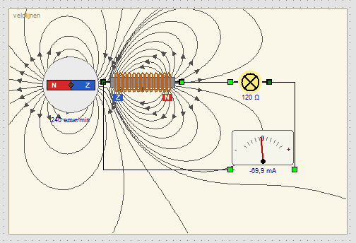

Leerpad › Magnetisme › Les 8 van 9 · Niveau: Uitgebreid
In les 7 gaf de spoel telkens een korte stroomstoot: de ene kant op als de magneet erin ging, de andere kant op als hij eruit ging. Laat je de magneet ronddraaien naast de spoel, dan wijst eerst de noordpool naar de spoel, dan de zuidpool, dan weer de noordpool, enzovoort. Het veld door de spoel verandert dus voortdurend van richting, en de spoel geeft een stroom die steeds van richting wisselt: een wisselstroom.
Zo werkt een fietsdynamo: het wieltje draait een magneet rond in een spoel. In een elektriciteitscentrale doen stoom, wind of stromend water een turbine draaien, die een grote magneet in een generator laat ronddraaien.
Links staat een draaiende magneet: een sterke staafmagneet op een as. Ernaast ligt een spoel met 400 windingen en een ijzeren kern. De spoel is in serie verbonden met een lamp en een nulpuntmeter. Er is geen bron: alle energie komt van de draaiende magneet.

Een wisselspanning verandert steeds van richting. Hoe vaak dat per seconde gebeurt, is de frequentie, in hertz (Hz). Bij de dynamo is de frequentie gelijk aan het aantal omwentelingen per seconde: 120 omw/min is 2 Hz. Het stopcontact thuis geeft wisselspanning van 50 Hz; de generator in de centrale draait daarvoor 3000 keer per minuut. Meer over wisselspanning vind je in les 35.
Volgens de wet van Lenz werkt de opgewekte stroom de beweging tegen: de spoel remt de draaiende magneet af. Hoe meer stroom de lamp vraagt, hoe harder die rem. Daarom fiets je zwaarder met de dynamo aan, en daarom verbruikt een centrale meer brandstof als er meer elektriciteit gevraagd wordt. De energie in de lamp komt uit de beweging.
1. Sleep een oscilloscoop uit de onderdelenbalk en verbind haar twee klemmen met de twee klemmen van de lamp. Laat de magneet draaien met 120 omw/min en zet de scoop op 4 s. Hoeveel golven zie je op het scherm? Wat is de frequentie?
2. Waarom brandt de lamp feller als de magneet sneller draait?
1. Ongeveer 8 golven in 4 seconden: 2 per seconde, dus 2 Hz. Dat is precies 120 omwentelingen per minuut gedeeld door 60.
2. Hoe sneller de magneet draait, hoe sneller het veld door de spoel verandert. Een snellere verandering geeft een hogere inductiespanning (les 7), dus een grotere stroom door de lamp.